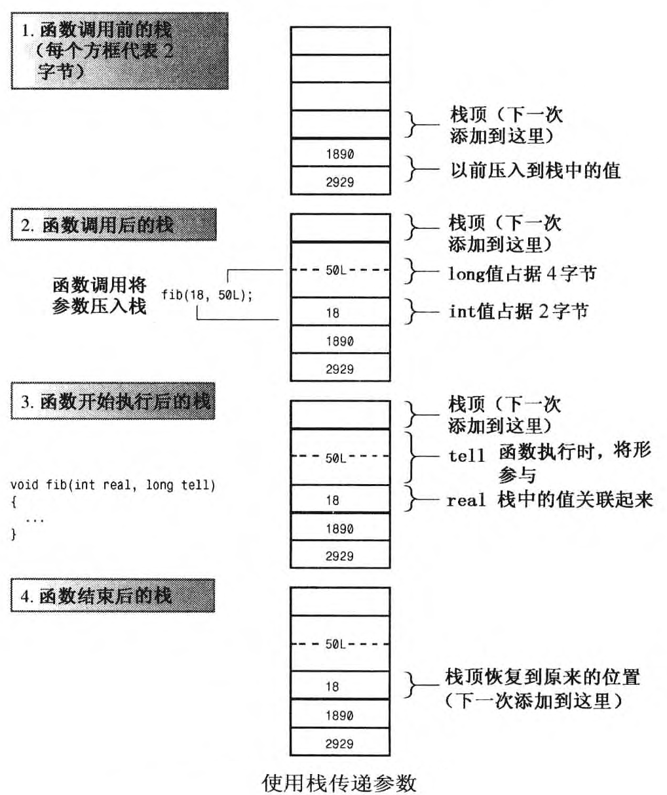
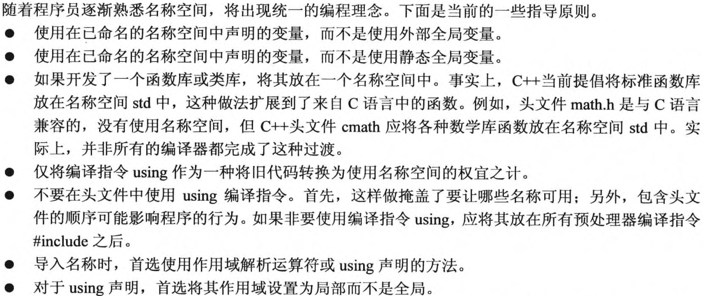
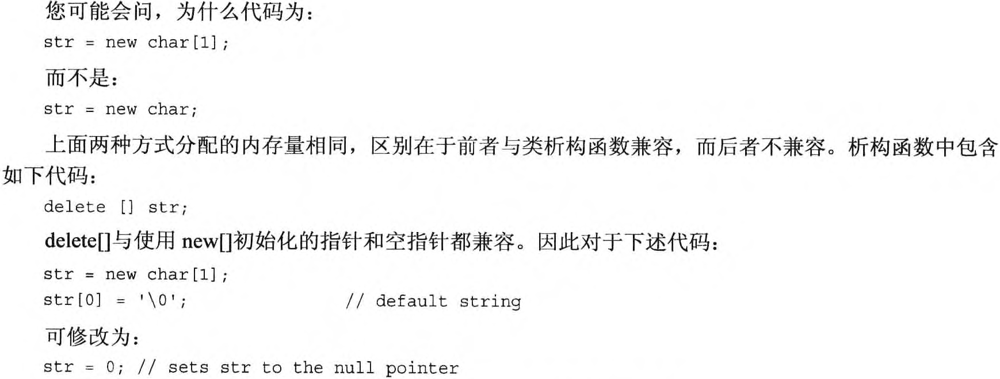
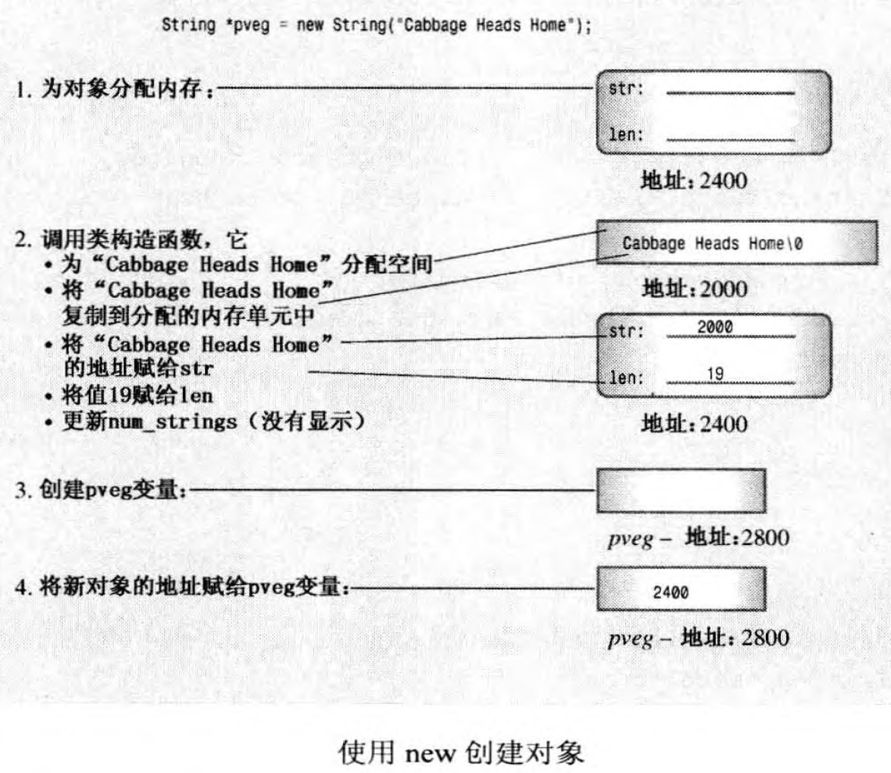
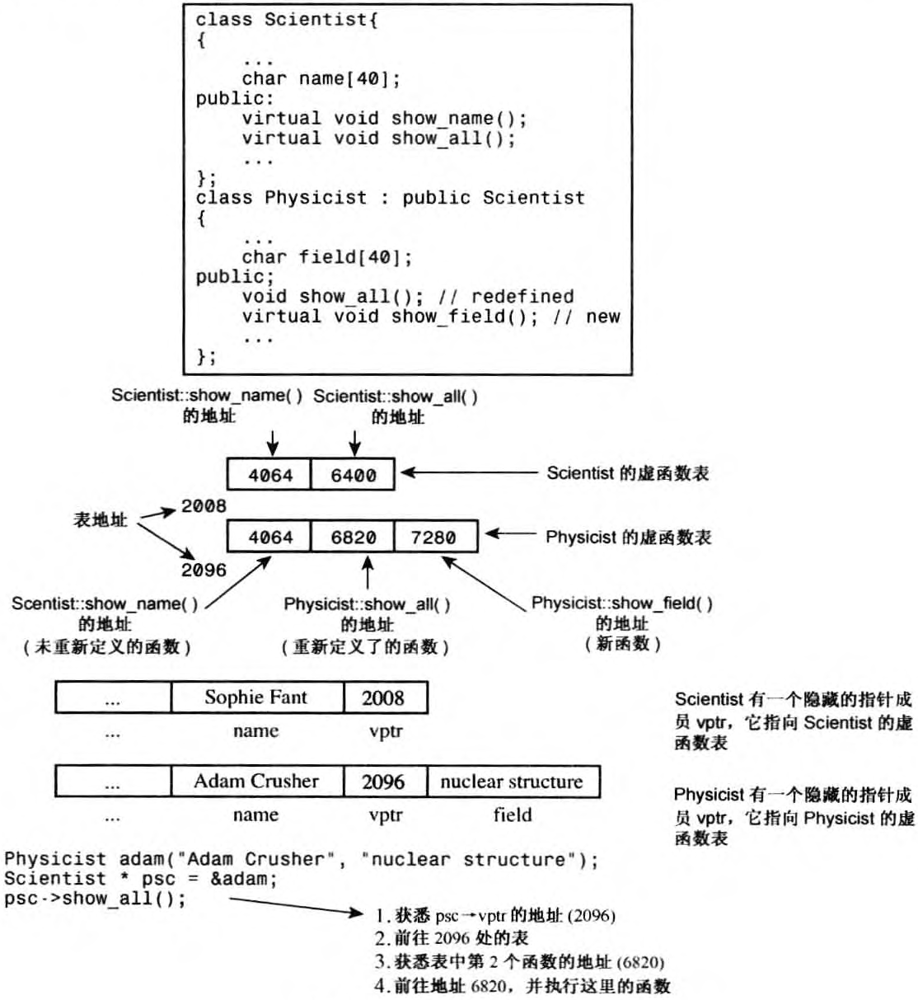
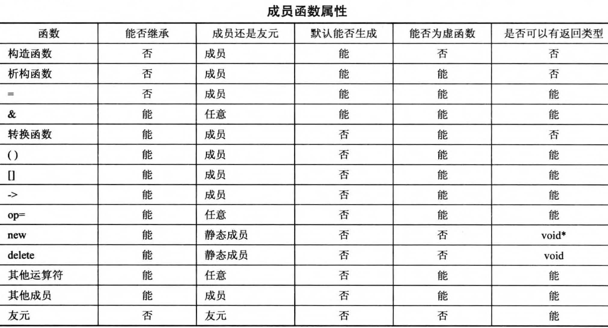
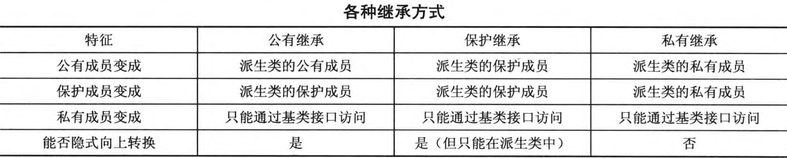

hints
宽度
初始化器
自然长度
源字符集 执行字符集
通用字符名
算术类型
任何值或任何有效的值和运算符的组合都是表达式
＜＜运算符的优先级比表达式中使用的运算符高
声明语句表达式(declaration-statement expression)
for-init-statement
顺序
C+＋确保程序从左向右进行计算逻辑表达式，并在知道答案后立刻停止
静态类型检查
仅当只有一层间接关系时，才可以将非const地址或指针赋给const指针
容忍逻辑上无法自圆其说的观点正是人类思维活动的特点
自动推断只能用于单值初始化，不能用于初始化列表
引用更接近const指针
常量引用
零时变量会使函数在可处理的参数种类方面更加通用，其行为类似按值传递
将引用参数声明为常量数据的引用理由有三个:使用const可以避免无意中修改数据； 使函数可以处理const和非const实参；使函数可以正确生成使用临时变量。
右值引用
模糊特性增加了犯错的机会
内置数据类型用指针，类用引用
C强调速度，CPP强调稳定性
“多态”指有多种形式
模板特性有时也被称为参数化类型
编译器在选择原型时，非模板版本优先于显式具体化，显式具体化优先于模板版本
函数模板只是一个用于生成函数定义的方案
模板并非函数定义，模板实例是函数定义
隐式实例化、显式实例化、显式具体化统称为具体化
显式实例化遇到引用可能会出问题
重载解析
最具体并不意味着显式具体化
“最具体”
C11后置返回类型
存储持续性，作用域和链接
头文件：包含结构声明和使用这些结构的函数原型
源代码文件：包含与结构相关的函数的代码
源代码文件：包含调用与结构相关的函数的代码
翻译单元
自动存储持续性(auto/register)
静态存储持续性(static/全局)
线程存储持续性(C++11)
动态存储持续性(堆)
链接性决定了哪些信息可在文件间共享
 静态变量都先执行零初始化后覆盖
关键字重载
存储说明符/cv-限定符
通常编译器使用三块独立的内存：一块用于静态变量，一块用于自动变量，一块用于动态存储
您可能想知道定位new运算符的工作原理。基本上，它只是返回传递给它的地址，并将其强制转换为void*，以便能够赋给任何指针类型。但这说的是默认定位new函数，C++允许程序员重载定位new函数
名称可以是变量、函数、结构、枚举、类以及类和结构的成员
声明区域(declaration region)
潜在作用域(potential scope)

在默认情况下，在名称空间中声明的名称的链接性为外部的(除非它引用了常量)。
全局名称空间(global namespace)
 生活中充满复杂性，处理复杂性的方法之一是简化和抽象
在C丑中，用户定义类型指的是实现抽象接口的类设计
数据隐藏不仅可以防止直接访问数据，还让开发者(类的用户)无需了解数据是如何被表示的
使用私有成员函数来处理不属于公有接 口的实现细节
定义位于类声明中的函数都将自动成为内联函数
内联函数的特殊规则要求在每个使用它们的文件中都对其进行定义
根据改写规则(rewrite rule)，在类声明中定义方法等同于用原型替换方法定义，然后在类声明的后面将定义改写为内联函数
隐式地调用默认构造函数时，不要使用圆括号
默认构造函数可以没有任何参数；如果有，则必须给所有参数都提供默认值
第一条语句是初始化，它创建有指定值的对象，可能会创建临时对象(也可能不会)；第二条语句是赋值。像这样在赋值语句中使用构造函数总会导致在赋值前创建一个临时对象。
初始化对象数组的方案是，首先使用默认构造函数创建数组元素，然后括号中的构造函数将创建临时对象，然后将临时对象的内容复制到相应的元素中。因此，要创建类对象数组，则这个类必须有默认构造函数。
作用域内枚举(C++11)
ADT以通用的方式描述数据类型，而没有引入语言或实现细节
只有类声明可以决定哪一个函数是友元，因此类声明仍然控制了哪些函数可以访问私有数据
状态成员(state member)
如果方法通过计算得到一个新的类对象，则应考虑是否可以使用类构造函数来完成这种工作。这样做不仅可以避免麻烦，而且可以确保新的对象是按照正确的方式创建的
将接口与实现分离是OOP的目标之一，这样允许对实现进行调整，而无需修改使用这个类的程序中的代码
因为所有的Vector类方法的作用域都为整个类，所以导入类名后，无需提供其他using 声明，就可以使用Vector的方法。
只接受一个参数的构造函数定义了从参数类型到类类型的转换。如果使用关键字explicit限定了这种构造函数，则它只能用于显示转换，否则也可以用于隐式转换。
友元函数与成员函数之间的区别是什么？
不能在类声明中初始化静态成员变量，这是因为声明描述了如何分配内存，但并不分配内存。如果在头文件中进行初始化，将出现多个初始化语句副本，从而引发错误。
对于不能在类声明中初始化静态数据成员的一种例外情况是，静态数据成员为整型或枚举型const
按值传递意味着创建原始变量的一个副本
默认的复制构造函数逐个复制非静态成员(成员复制也称为浅复制)，复制的是成员的值
如果类中包含了使用new初始化的指针成员，应当定义一个复制构造函数，以复制指向的数据，而不是指针，这被称为深度复制。复制的另一种形式(成员复制或浅复制)只是复制指针值。浅复制仅浅浅地复制指针信息，而不会深入＂挖掘“以复制指针引用的结构。
初始化总是会调用复制构造函数，而使用式运算符时也可能调用赋值运算符
赋值运算符有两个责任：妥善删除旧的数据、赋得新的数据，另外还要注意把自己赋给自己
 空指针本身的内部表示可能不是零
首先，不能通过对象调用静态成员函数；实际上，静态成员函数甚至不能使用this指针。其次，由于静态成员函数不与特定的对象相关联，因此只能使用静态数据成员。可以使用静态成员函数设置类级(classwide)标记，以控制某些类接口的行为。
使用const引用的常见原因是旨在提高效率
 显式地调用析构函数时，必须指定要销毁的对象
对于使用定位new运算符创建的对象，应以与创建顺序相反的顺序进行删除。原因在于，晚创建的对象可能依赖于早创建的对象。另外，仅当所有对象都被销毁后，才能释放用于存储这些对象的缓冲区
构造函数中要么使用new []，要么使用new，而不能混用。如果构造函数使用的是new [］，则析构函数应使用delete []；如果构造函数使用的是new，则析构函数应使用delete
在类声明中声明的结构、类或枚举被称为是被嵌套在类中，其作用域为整个类。这种声明不会创建数据对象，而只是指定了可以在类中使用的类型。如果声明是在类的私有部分进行的，则只能在这个类使用被声明的类型；如果声明是在公有部分进行的，则可以从类的外部通过作用域解析运算符使用被声明的类型
C++允许在类中包含结构、类和枚举定义。这些嵌套类型的作用域为整个类，这意味着它们被局限于类中，不会与其他地方定义的同名结构、类和枚举发生冲突。
成员初始化列表(member initializer list)
只有构造函数可以使用这种初始化列表语法。对于const类成员，必须使用这种语法。另外，对于被声明为引用的类成员，也必须使用这种语法
使用成员初始化列表的构造函数将覆盖相应的类内初始化
数据成员被初始化的顺序与它们出现在类声明中的顺序相同，与初始化器中的排列顺序无关
复制构造函数还被用于创建其他的临时对象
面向对象编程的主要目的之一是提供可重用的代码。开发新项目，尤其是当项目十分庞大时，重用经过测试的代码比重新编写代码要好得多。使用已有的代码可以节省时间，由于已有的代码已被使用和测试过，因此有助于避免在程序中引入错误。另外，必须考虑的细节越少，便越能专注于程序的整体策略。
通常，类库是以源代码的方式提供的，这意味着可以对其进行修改，以满足需求。然而，C++提供了比修改代码更好的方法来扩展和修改类。这种方法叫作类继承，它能够从已有的类派生出新的类，而派生类继承了原有类(称为基类)的特征，包括方法。
公有继承是最常用的方式，它建立一种is-a关系，即派生类对象也是一个基类对象，可以对基类对象执行的任何操作，也可以对派生类对象执行。因为派生类可以添加特性，所以，将这种关系称为is-a-kind-of(是一种)关系可能更准确，但是通常使用术语is-a。公有继承不能建立is-like-a关系，也就是说，它不采用明喻。公有继承不能建立is-like-a关系，也就是说，它不采用明喻。继承可以在基类的基础上添加属性，但不能删除基类的属性。在有些情况下，可以设计一个包含共有特征的类，然后以is-a或has-a关系，在这个类的基础上定义相关的类。
公有继承不建立is-implemented-as-a关系
如果没有使用关键字virtual，程序将根据引用类型或指针类型选择方法；如果使用了virtual，程序将根据引用或指针指向的对象的类型来选择方法。
方法在基类中被声明为虚的后，它在派生类中将自动成为虚方法。然而，在派生类声明中使用关键字virtual来指出哪些函数是虚函数也不失为一个好办法。
在派生类方法中，标准技术是使用作用域解析运算符来调用基类方法
将源代码中的函数调用解释为执行特定的函数代码块被称为函数名联编(binding)
在编译过程中进行联编被称为静态联编(static binding)，又称为早期联编(early binding)
编译器必须生成能够在程序运行时选择正确的虚方法的代码，这被称为动态联编(dynamic binding)，又称为晚期联编(late binding )
将派生类引用或指针转换为基类引用或指针被称为向上强制转换(upcasting)，这使公有继承不需要进行显式类型转换。该规则是is-a关系的一部分
相反的过程将基类指针或引用转换为派生类指针或引用称为向下强制转换(downcasting)。如果不使用显式类型转换，则向下强制转换是不允许的
隐式向上强制转换使基类指针或引用可以指向基类对象或派生类对象，因此需要动态联编。C++使用虚成员函数来满足这种需求
编译器对非虚方法使用静态联编，对虚方法使用动态联编
Strousstrup说，C++的指导原则之一是，不要为不使用的特性付出代价(内存或者处理时间)。仅当程序设计确实需要虚函数时，才使用它们。
如果要在派生类中重新定义基类的方法，则将它设置为虚方法；否则，设置为非虚方法
 即使基类不需要显式析构函数提供服务，也不应依赖于默认构造函数，而应提供虚析构函数，即使它不执行任何操作
友元不能是虚函数，因为友元不是类成员，而只有成员才能是虚函数
如果在派生类中重新定义函数，将不是使用相同的函数特征标覆盖基类声明，而是隐藏同名的基类方法，不管参数特征标如何这引出了两条经验规则：第一，如果重新定义继承的方法，应确保与原来的原型完全相同，但如果返回类型是基类引用或指针，则可以修改为指向派生类的引用或指针(这种例外是新出现的)。这种特性被称为返回类型协变(covariance of return type)，因为允许返回类型随类类型的变化而变化
对于外部世界来说，保护成员的行为与私有成员相似；但对于派生类来说，保护成员的行为与公有成员相似
C++通过使用纯虚函数(pure virtual function)提供未实现的函数
ABC描述的是至少使用一个纯虚函数的接口，从ABC派生出的类将根据派生类的具体特征，使用常规虚函数来实现这种接口
一种学院派思想认为，如果要设计类继承层次，则只能将那些不会被用作基类的类设计为具体的类
成员复制将根据数据类型采用相应的复制方式
使用函数表示法使得赋值运算符被正确调用
当基类和派生类都采用动态内存分配时，派生类的析构函数、复制构造函数、赋值运算符都必须使用相应的基类方法来处理基类元素。这种要求是通过三种不同的方式来满足的。对于析构函数，这是自动完成的；对于构造函数，这是通过在初始化成员列表中调用基类的复制构造函数来完成的；如果不这样做，将自动调用基类的默认构造函数。对于赋值运算符，这是通过使用作用域解析运算符显式地调用基类的赋值运算符来完成的。
自动生成的默认构造函数的另一项功能是，调用基类的默认构造函数以及调用本身是对象的成员所属类的默认构造函数。
由于友元函数并非类成员，因此不能继承。然而，您可能希望派生类的友元函数能够使用基类的友元函数。为此，可以通过强制类型转换将，派生类引用或指针转换为基类引用或指针，然后使用转换后的指针或引用来调用基类的友元函数
 通常，包含、私有继承和保护继承用于实现has-a关系，即新的类将包含另一个类的对象
使用公有继承时，类可以继承接口，可能还有实现(基类的纯虚函数提供接口，但不提供实现)。获得接口是is-a关系的组成部分。而使用组合，类可以获得实现，但不能获得接口。不继承接口是has-a关系的组成部分
如果代码使用一个成员的值作为另一个成员的初始化表达式的一部分时，初始化顺序就非常重要了
包含将对象作为一个命名的成员对象添加到类中，而私有继承将对象作为一个未被命名的继承对象添加到类中
使用多个基类的继承被称为多重继承(multiple inheritance，MI)
私有继承使得能够使用类名和作用域解析运算符来调用基类的方法
在私有继承中，在不进行显式类型转换的情况下，不能将指向派生类的引用或指针赋给基类引用或指针
派生类可以重新定义虚函数，但包含类不能
使用私有继承，重新定义的函数将只能在类中使用，而不是公有的
通常，应使用包含来建立has-a关系；如果新类需要访问原有类的保护成员，或需要重新定义虚函数，则应使用私有继承
使用保护继承时，基类的公有成员和保护成员都将成为派生类的保护成员
 C＋＋在基类是虚的时，禁止信息通过中间类自动传递给基类
如果类有间接虚基类，则除非只需使用该虚基类的默认构造函数，否则必须显式地调用该虚基类的某个构造函数
当类通过多条虚途径和非虚途径继承某个特定的基类时，该类将包含一个表示所有的虚途径的基类子对象和分别表示各条非虚途径的多个基类子对象
使用虚基类将改变C++解析二义性的方式
派生类中的名称优先于直接或间接祖先类中的相同名称
虚二义性规则与访问规则无关
可以使用自己的泛型名代替Type，其命名规则与其他标识符相同。当前流行的选项包括T和Type
不能将模板成员函数放在独立的实现文件中
模板不是函数，它们不能单独编译。模板必须与特定的模板实例化请求一起使用
必须显式地提供所需的类型
可以在模板声明或模板函数定义内使用Stack，但在类的外面，即指定返回类型或使用作用域解析运算符时，必须使用完整的Stack\<Type\>
模板常用作容器类，这是因为类型参数的概念非常适合于将相同的存储方案用于不同的类型
表达式参数有一些限制。表达式参数可以是整型、枚举、引用或指针。因此，double m 是不合法的，但double rm和double pm是合法的。另外，模板代码不能修改参数的值，也不能使用参数的地址。另外，实例化模板时，用作表达式参数的值必须是常量表达式。
虽然可以为类模板类型参数提供默认值，但不能为函数模板参数提供默认值。然而，可以为非类型参数提供默认值，这对于类模板和函数模板都是适用的。
编译器在需要对象之前，不会生成类的隐式实例化
当使用关键字template并指出所需类型来声明类时，编译器将生成类声明的显式实例化(explicit instantiation)。声明必须位于模板定义所在的名称空间中。
可以提供一个显式模板具体化，这将采用为具体类型定义的模板，而不是为泛型定义的模板。当具体化模板和通用模板都与实例化请求匹配时，编译器将使用具体化版本
C++还允许部分具体化(partial specialization)，即部分限制模板的通用性
如果有多个模板可供选择，编译器将使用具体化程度最高的模板

模板可用作结构、类或模板类的成员

可以混合使用模板参数和常规参数
counts()函数不是通过对象调用的(它是友元，不是成员函数)，也没有对象参数，那么它如何访问HasFriend对象呢？有很多种可能性。它可以访问全局对象；可以使用全局指针访问非全局对象；可以创建自己的对象；可以访问独立于对象的模板类的静态数据成员。
模板参数语法
可使用typedef为模板具体化指定别名，C++11新增了一项功能——使用模板提供一系列别名
C++11允许将语法using ＝用于非模板。用于非模板时，这种语法与常规typedef 等价，习惯这种语法后，您可能发现其可读性更强，因为它让类型名和类型信息更清晰。
可以通过开发包含对象成员的类来重用类代码。这种方法被称为包含、层次化或组合，它建立的也是has-a关系。与私有继承和保护继承相比，包含更容易实现和使用，所以通常优先采用这种方式。然而，私有继承和保护继承比包含有一些不同的功能。例如，继承允许派生类访问基类的保护成员；还允许派生类重新定义从基类那里继承的虚函数。因为包含不是继承，所以通过包含来重用类代码时，不能使用这些 功能。另一方面，如果需要使用某个类的儿个对象，则用包含更适合。例如， State 类可以包含一组County对象。
类定义(实例化)在声明类对象并指定特定类型时生成
第十四章最后一题
哪些函数、成员函数或类为友元是由类定义的，而不能从外部强加友情。因此，尽管友元被授予从外部访问类的私有部分的权限，但它们并不与面向对象的编程思想相悖；相反，它们提高了公有接口的灵活性。
友元声明可以位于公有、私有或保护部分，其所在的位置无关紧要。
类友元是一种自然用语，用千表示一些关系
前向声明(forward declaration)
通过在方法定义中使用inline 关键字，仍然可以使其成为内联方法。 指引:参见前文

在C++中，可以将类声明放在另一个类中。在另一个类中声明的类被称为嵌套类( nested class) ，它通过提供新的类型类作用域来避免名称混乱。
对类进行嵌套与包含并不同。包含意味着将类对象作为另一个类的成员，而对类进行嵌套不创建类成员，而是定义了一种类型，该类型仅在包含嵌套类声明的类中有效。

对千被零除的情况，很多新式编译器通过生成一个表示无穷大的特殊浮点值来处理， cout 将这种值显示为Inf、inf、INF 或类似的东西；而其他的编译器可能生成在发生被零除时崩溃的程序。
对内置类型的参数，很多程序员都倾向于使用指针，因为这样可以明显看出是哪个参数用于提供答案。
另一种在某个地方存储返回条件的方法是使用一个全局变量。可能问题的函数可以在出现问题时将该全局变量设置为特定的值，而调用程序可以检查该变量。传统的C 语言数学库使用的就是这种方法，它使用的全局变量名为errno 。当然，必须确保其他函数没有将该全局变量用于其他目的。
throw 语句实际上是跳转，即命令程序跳到另一条语句。. throw 关键字表示引发异常，紧随其后的值（例如字符串或对象）指出了异常的特征。
catch 关键字和异常类型用作标签，指出当异常被引发时， 程序应跳到这个位置执行。异常处理程序也被称为catch 块。
try 块标识其中特定的异常可能被激活的代码块，它后面跟一个或多个catch 块。try 块是由关键字try 指示的，关键字try 的后面是一个由花括号括起的代码块，表明需要注意这些代码引发的异常。
异常类型可以是字符串（就像这个例子中那样）或其他C++类型；通常为类类型，本章后面的示例将说明这一点。
执行throw 语句类似于执行返回语句，因为它也将终止函数的执行；但throw 不是将控制权返回给调用程序，而是导致程序沿函数调用序列后退，直到找到包含try 块的函数。
您可能会问，如果函数引发了异常，而没有try 块或没有匹配的处理程序时，将会发生什么情况。在默认情况下下，程序最终将调用abort( ）函数，但可以修改这种行为。
通常，引发异常的函数将传递一个对象。这样做的重要优点之一是，可以使用不同的异常类型来区分不同的函数在不同情况下引发的异常。另外，对象可以携带信息，程序员可以根据这些信息来确定引发异常的原因。
C++11确实支持一种特殊的异常规范： 您可使用新增的关键字noexcept 指出函数不会引发异常。
函数返回仅仅处理该函数放在栈中的对象，而throw 语句则处理try 块和throw 之间整个函数调用序列放在栈中的对象。如果没有栈解退这种特性，则引发异常后，对于中间函数调用放在栈中的自动类对象，其析构函数将不会被调用。

引发异常时编译器总是创建一个临时拷贝，即使异常规范和catch 块中指定的是引用。
将引发异常和创建对象组合在一起将更简单
复制构造函数参数应使用引用
如果有一个异常类继承层次结构，应这样排列catch 块：将捕获位于层次结构最下面的异常类的catch 语句放在最前面，将捕获基类异常的catch 语句放在最后面。
使用省略号来表示异常类型，从而捕获任何异常
在catch 语句中使用基类对象时，将捕获所有的派生类对象，但派生特性将被剥去，因此将使用虚方法的基类版本。
未被捕获的异常（没有匹配的catch 块的异常）在默认情况下将终止程序，意外异常（不与任何异常规范匹配的异常）也是如此。
如果没被捕获（在没有try 块或没有匹配的catch 块时，将出现这种情况），则异常被称为未捕获异常(uncaught exception ）。在默认情况下，这将导致程序异常终止。然而，可以修改程序对意外异常和未捕获异常的反应。
应在设计程序时就加入异常处理功能，而不是以后再添加。
异常规范不适用于模板，因为模板函数引发的异常可能随特定的具体化而异。
异常和动态内存分配并非总能协同工作。
虽然throw语句过早地终止了函数，但它仍然使得析构函数被调用，这要归功于栈解退。

只能将RTTI 用千包含虚函数的类层次结构，原因在千只有对千这种类层次结构，才应该将派生对象的地址赋给基类指针。
与问题”指针指向的是哪种类型的对象”相比，问题“类型转换是否安全”更通用，也更有用。
如果发现在扩展的if else 语句系列中使用了typeid, 则应考虑是否应该使用虚函数和dynamic_cast。
对千这种松散情况， Stroustrop 采取的措施是，更严格地限制允许的类型转换，并添加4 个类型转换运算符，使转换过程更规范：
dynamic_ cast
const_cast
static_cast
remterpret_cast
这些限制是合理的，如果您觉得这种限制难以忍受，可以使用C 语言。